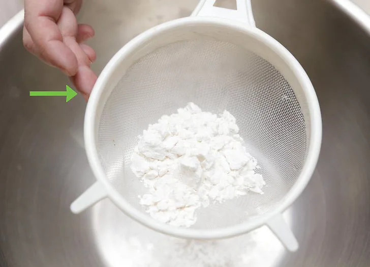
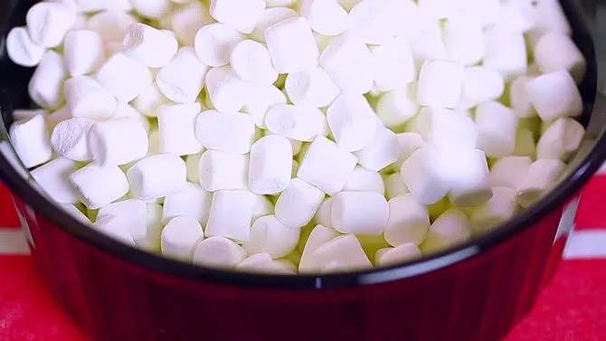
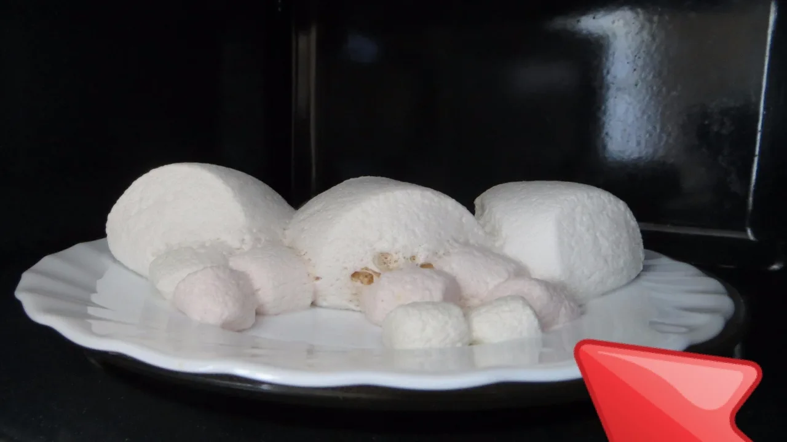
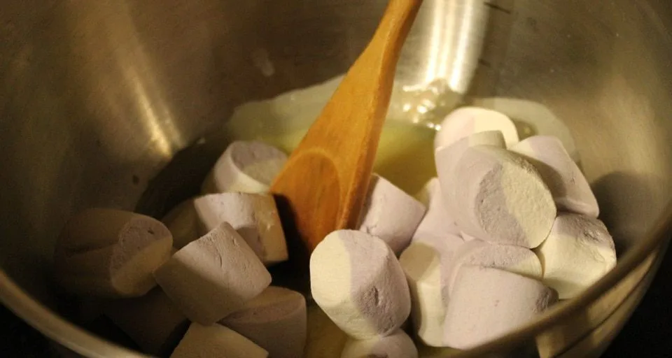
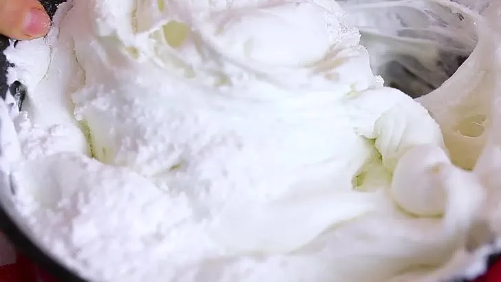
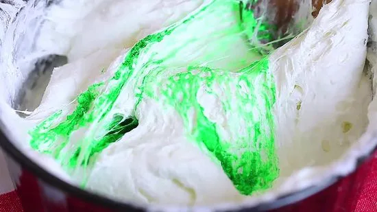
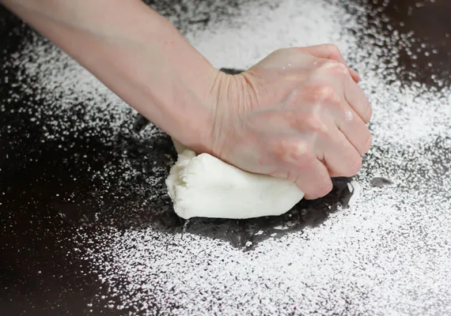
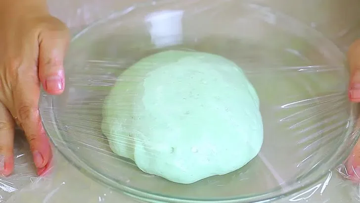

Многие сладкоежки хотят узнать самый простой и понятный рецепт мастики из маршмеллоу пошагово. Им мы и поделимся в этой статье. Лакомки отмечают, что это кондитерское украшение является не таким приторным, как сахарная паста, изготовленная из других компонентов.
Интересно!
Из marshmallow можно легко вылепить нужные фигурки и детали. Такой материал для украшения отлично сохнет, не ломается при манипуляциях с декорированием и прекрасно держит форму.
Необходимые ингредиенты и оборудование
Как приготовить мастику из маршмеллоу? Для этого вам понадобятся следующие ингредиенты:
- 1 упаковка нежных воздушных зефиринок (зачастую 90 грамм);
- 1 стакан сахарной пудры;
- ½ стакана картофельного или кукурузного крахмала;
- 1 ст. ложка молока или лимонного сока;
- 1 ч. л. сливочного масла;
- по желанию пищевой краситель (сухой или гелевый).
Также для приготовления будут нужны:
- сито для просеивания сыпучих компонентов;
- глубокая посуда;
- лопатка или ложка для размешивания;
- разделочная доска для раскатки;
- пищевая пленка.
Полезно знать!
Рецепт мастики из маршмеллоу для торта – самый простой для начинающих кондитеров. В этом деле форма жевательного суфле абсолютно неважна: бочонки, косички, пружинки… На вкус данный параметр никак не повлияет.
Рецепт мастики из маршмеллоу пошагово: просеиваем, растапливаем, мешаем…
Мастика из маршмеллоу своими руками готовится за 3 шага. На фото все будет наглядно видно.
Этап 1.

Просеивание.
Чтобы кондитерское изделие не порвалось, следует отсеять посредством ситечка или органзы все крупные крупинки из сыпучих компонентов.
Этап 2.

Растапливаем зефирки. Это можно сделать с помощью микроволновой печи или водяной бани. Конфетки должны увеличиться в объеме почти в два раза.
Вариант 1. Микроволновая печь.

Выложите суфле и 1 чайную ложку сливочного масла в емкость для разогрева, выставьте таймер на 40 секунд (в зависимости от модели может понадобиться больше).
Вариант 2. Водяная баня.

Если суфле крупной формы, нарежьте его на небольшие кусочки, вместе с 1 чайной ложкой сливочного масла положите в миску, которую можно удобно установить на кастрюлю с кипящей водой. Топите зефирную массу около 15 минут и непрерывно ее помешивайте. Когда суфле полностью растает, снимите его с огня.
Важно!
Внимательно следите за консистенцией конфет: если их перетопить, образуются комочки, и в дальнейшем смесь станет непригодной для изготовления качественных фигурок.
Этап 3.

Добавьте к растопившейся жиже столовую ложку молока или же лимонного сока. Тщательно перемешайте. По желанию используйте пищевые красители.

Аккуратно введите в массу просеянный крахмал и сахарный песок (добавляйте попеременно), пока не добьетесь пластичности. Мешайте лопаточкой, после остывания можно приступить к вымешиванию руками.
Мастика из маршмеллоу с крахмалом готова.
Добавим красок

Для насыщенной покраски мастики стоит использовать белое суфле. Но зачастую в магазинах продаются двухцветные конфетки. Поэтому перед приготовлением украшения желательно разделить их на порции. Отделите белую часть для дальнейшей покраски, а розовые, голубые, шоколадные, зеленые составные сладостей используйте отдельно (они дают на выходе нежные пастельные оттенки). Красители лучше всего добавлять в подтаявшее и набухшее суфле, тщательно перемешивая.
Густые гелевые вещества помогают легко добиться желаемого результат, но если ваш выбор пал на сухой, предварительно разбавьте его жидкостью (водой или водкой). Также можно приготовить натуральные красители:
- использовать ягодные соки – они дадут насыщенные багровые, красные цвета;
- какао для коричневого цвета;
- шпинат (зеленый оттенок);
- активированный уголь для черной мастики.
Помешаем еще чуть-чуть

Когда густеющую жижу станет трудно размешивать ложкой в миске, выложите ее на разделочную доску, предварительно посыпанную сахарным песком. Для дополнительного удобства опытные кондитеры советуют обернуть доску пищевой пленкой.
Если мастичный комок напоминает тугое, дубовое тесто, попробуйте оторвать от него небольшой кусочек, скатать его в шарик и слепить незамысловатую фигурку. В случае возвращения детали к прежней форме кондитерское изделие не считается готовым (дальнейшая лепка будет неаккуратной). Чтобы исправить ситуацию, стоит снова растопить смесь и подмешать к ней пудру.
Мастика будет готова, когда комок из нее перестанет очень сильно липнуть к рукам, а фигурка начнет держать форму.
Хранение мастики

Мы рассмотрели пошаговый рецепт, как приготовить мастику из зефира, но не последнее место в дальнейшем ее использовании занимает правильное хранение.
Неиспользованную мастику следует положить в холодильник, предварительно обернув ее в пищевую пленку и фольгу. Нужно следить, чтобы на приготовленное изделие не попадал воздух, из-за которого она потеряет пластичность и быстро засохнет.
Средний срок – 1,5 месяца (в некоторых случаях – до 3 месяцев). В морозильной камере она может пролежать 6 месяцев. Для срочного размораживания можно воспользоваться микроволновой печью.
Готовые фигурки храните в плотно закрытой коробке несколько месяцев.